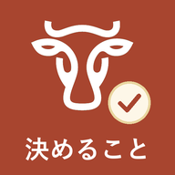

<!DOCTYPE html>
<html lang="ja">
<head>
  <meta charset="utf-8">
  <meta name="viewport" content="width=device-width, initial-scale=1, viewport-fit=cover">
  <title>決めること</title>

  <!-- iPhone：ホーム画面のアイコンと名前 -->
  <link rel="apple-touch-icon" href="apple-touch-icon.png">
  <meta name="apple-mobile-web-app-title" content="決めること">
  <meta name="apple-mobile-web-app-capable" content="yes">
  <meta name="mobile-web-app-capable" content="yes">
  <meta name="apple-mobile-web-app-status-bar-style" content="default">

  <!-- Android・Windows・パソコン用 -->
  <link rel="manifest" href="manifest.json">
  <link rel="icon" type="image/png" href="icon-192.png">
  <meta name="theme-color" content="#a8452f">

  <style>
    html, body { margin: 0; height: 100%; background: #f2f6f9; font-family: "Hiragino Sans", "Noto Sans JP", system-ui, sans-serif; color: #16303f; }
    iframe { position: fixed; inset: 0; width: 100%; height: 100%; border: 0; }
    .msg { max-width: 420px; margin: 60px auto; padding: 24px 20px; background: #fff; border-radius: 18px; box-shadow: 0 6px 16px rgba(27,58,76,.08); text-align: center; line-height: 1.7; }
    .msg img { width: 72px; border-radius: 16px; }
    .msg input { width: 100%; box-sizing: border-box; margin-top: 14px; font-size: 15px; padding: 10px; border: 1px solid #d9e4ec; border-radius: 10px; }
    .msg button { margin-top: 10px; font-size: 16px; font-weight: 700; padding: 10px 24px; border: 0; border-radius: 12px; background: #a8452f; color: #fff; }
    .msg small { color: #5d7383; }
  </style>
</head>
<body>
  <script>
    // 鍵はこのページには書かない（公開の場所なので）。
    // 2026-11-19 iPhone はホーム画面のアプリと Safari とで保存場所が別。「ホーム画面に追加」したときのURLがそのまま起動URLになるので、
    // 鍵は ?k= としてURLに残す（古い #k= で開いたら ?k= に書きかえる）。manifest に start_url を書かないのも同じ理由。
    var EXEC = 'https://script.google.com/macros/s/AKfycbweBFqQ_3hq_fmIR12lAtrToWwCSDW2U5SU87Ng6k-H3Xjf1cQrMA93jEJDOObam79j4A/exec';
    function save(k) { try { localStorage.setItem('kime_key', k); } catch (e) {} }
    function load() { try { return localStorage.getItem('kime_key') || ''; } catch (e) { return ''; } }
    function pick(s) { var m = String(s || '').match(/[#&?]k=([0-9a-f]{16,})/); return m ? m[1] : (/^[0-9a-f]{16,}$/.test(String(s).trim()) ? String(s).trim() : ''); }
    var k = pick(location.search) || pick(location.hash) || load();
    if (k) {
      save(k);
      if (pick(location.search) !== k || location.hash) history.replaceState(null, '', location.pathname + '?k=' + k);
      var f = document.createElement('iframe');
      f.src = EXEC + '?page=kime&k=' + encodeURIComponent(k);
      document.body.appendChild(f);
    } else {
      document.body.innerHTML = '<div class="msg"><p><b>リンクを1回だけ入れてください</b></p>' +
        '<small>朝の報告（LINE）の「決めること」のリンクを長押し →「コピー」→ 下の欄を押して「ペースト」→「開く」。<br>次からはアイコンを押すだけで開きます。</small>' +
        '<input id="p" type="url" inputmode="url" autocomplete="off" placeholder="ここを押して貼る"><button onclick="var k=pick(document.getElementById(\'p\').value);if(k){save(k);location.replace(location.pathname+\'?k=\'+k)}">開く</button></div>';
    }
  </script>
</body>
</html>